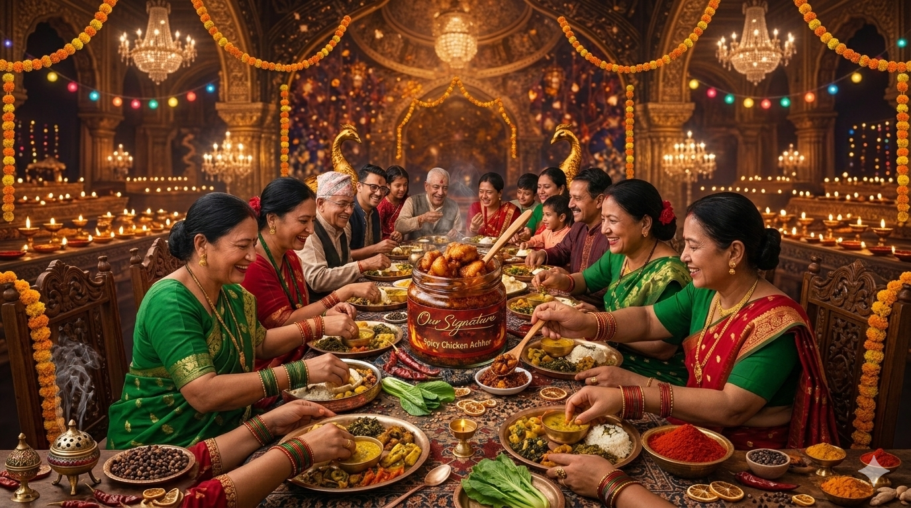
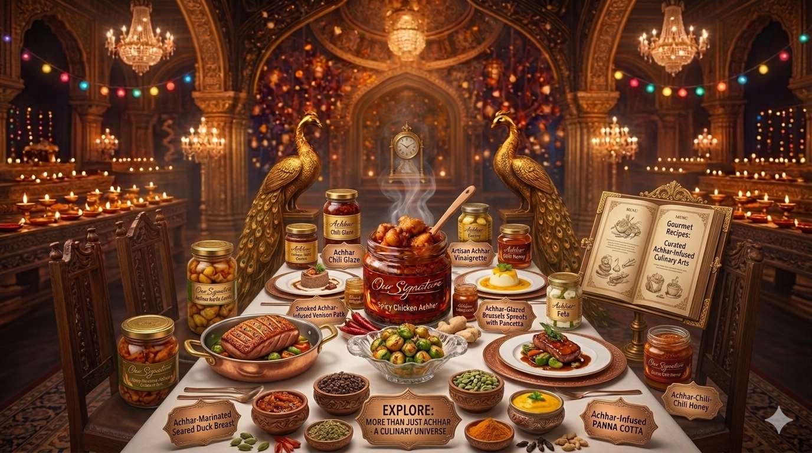

We asked ourselves a simple question:
What if the bold taste of Nepali spices and the rich flavor of chicken could come together in one unforgettable achar?
That is how Spicy Chicken Acchar was born.
It is the flavor that reminds you of home whether you are sitting around a family table in Nepal or living thousands of miles away.

Spicy Chicken Achar is not just a side dish. It is the spark that turns a simple meal into a memorable one. A spoonful beside your rice. A bold bite with your favorite snacks. A taste that brings people together. Because when there is spice, there is excitement. And when there is achar, there is always another reason to eat just one more bite.
Manual stone grinding ensures the oils within the spice remain intact, unlike industrial blenders that burn the flavor.
Pure mustard oil is heated to the smoking point, then infused with wild Himalayan herbs like Jimbu.
The jars are placed in the sun for 14 days, allowing the flavors to ferment and deepen into a complex umami.